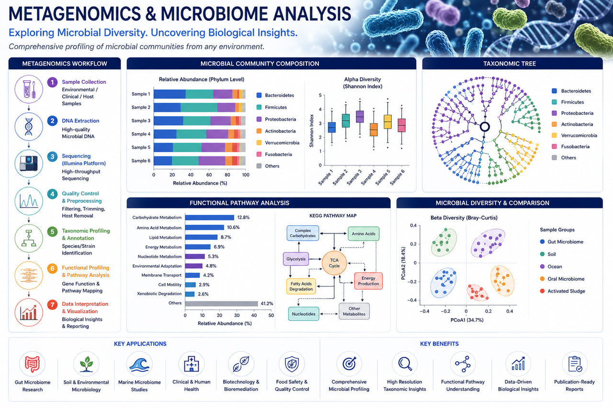

Metagenomics & Microbiome
AI-Powered Microbiome, Metagenomics & Microbial Community Analysis for Human Health, Agriculture & Environmental Research

RASA Life Science Informatics provides advanced Metagenomics & Microbiome analysis services that enable researchers to characterize microbial communities, understand host–microbe interactions, identify functional pathways, and discover microbiome-based biomarkers across diverse biological and environmental systems.
Our bioinformatics workflows support shotgun metagenomics, 16S rRNA sequencing, whole-metagenome sequencing (WMS), microbial diversity studies, functional profiling, resistome analysis, and microbiome-driven biomarker discovery. We help pharmaceutical companies, biotechnology organizations, hospitals, research institutes, agricultural researchers, and environmental scientists transform complex sequencing datasets into actionable biological insights.
Using scalable, cloud-ready, and reproducible pipelines, we support microbiome research across human health, oncology, gastrointestinal disorders, infectious diseases, agriculture, veterinary sciences, food safety, and environmental monitoring.
Metagenomics & Microbiome Services
16S rRNA Microbiome Analysis
Characterize microbial composition and diversity across biological samples.
- ✓Taxonomic classification
- ✓Alpha diversity analysis
- ✓Beta diversity analysis
- ✓Differential abundance analysis
- ✓Microbial community profiling
- ✓Biomarker identification
Shotgun Metagenomics Analysis
Comprehensive characterization of microbial communities at species and functional levels.
- ✓Taxonomic profiling
- ✓Functional pathway analysis
- ✓Gene abundance analysis
- ✓Microbial genome reconstruction
- ✓Species-level classification
- ✓Comparative metagenomics
Microbiome Functional Profiling
Investigate the biological functions encoded within microbial communities.
- ✓Metabolic pathway analysis
- ✓Functional annotation
- ✓Enzyme profiling
- ✓KEGG pathway analysis
- ✓Microbial gene function prediction
- ✓Community functional comparison
Host–Microbiome Interaction Analysis
Understand how microbial communities influence host physiology and disease.
- ✓Microbiome–host association studies
- ✓Disease-specific microbiome analysis
- ✓Multi-omics microbiome integration
- ✓Clinical microbiome profiling
- ✓Therapeutic response association studies
Resistome & Antimicrobial Resistance Analysis
Identify antimicrobial resistance genes and resistance mechanisms.
- ✓AMR gene detection
- ✓Resistome profiling
- ✓Mobile genetic element analysis
- ✓Resistance pathway characterization
- ✓Public health surveillance support
Key Features
Deliverables
Microbial Community Analysis
Functional Analysis Outputs
Visualization & Reporting
Applications
Human Microbiome Research
Gut, oral, skin, respiratory, and disease-associated microbiome studies.
Cancer Microbiome Studies
Microbiome-associated cancer biomarkers and therapeutic response analysis.
Infectious Disease Research
Microbial community profiling and pathogen surveillance.
Precision Medicine
Microbiome-driven patient stratification and biomarker discovery.
Agriculture & Veterinary Sciences
Plant microbiome, soil microbiome, livestock health, and agricultural biotechnology research.
Environmental Microbiology
Environmental monitoring, biodiversity assessment, and ecosystem studies.
Technologies & Platforms
Microbiome Analysis Tools
Shotgun Metagenomics Tools
Functional Analysis
Infrastructure
Representative Analysis Outputs
Microbial Diversity Profiling
Characterization of microbial richness, diversity, and community structure.
Functional Microbiome Analysis
Identification of metabolic pathways and microbial functions.
Host–Microbiome Associations
Discovery of microbiome signatures linked to disease and therapeutic response.
Resistome Analysis
Detection and characterization of antimicrobial resistance genes.
Microbiome Biomarker Discovery
Identification of predictive and diagnostic microbial biomarkers.
Why Choose RASA?
Frequently Asked Questions
Ready to partner with a trusted bioinformatics company in India?
Get in touch with our team in Pune, India to discuss sample sizes, platform details, and custom bioinformatics pipeline configurations for your research program.
Start a Project